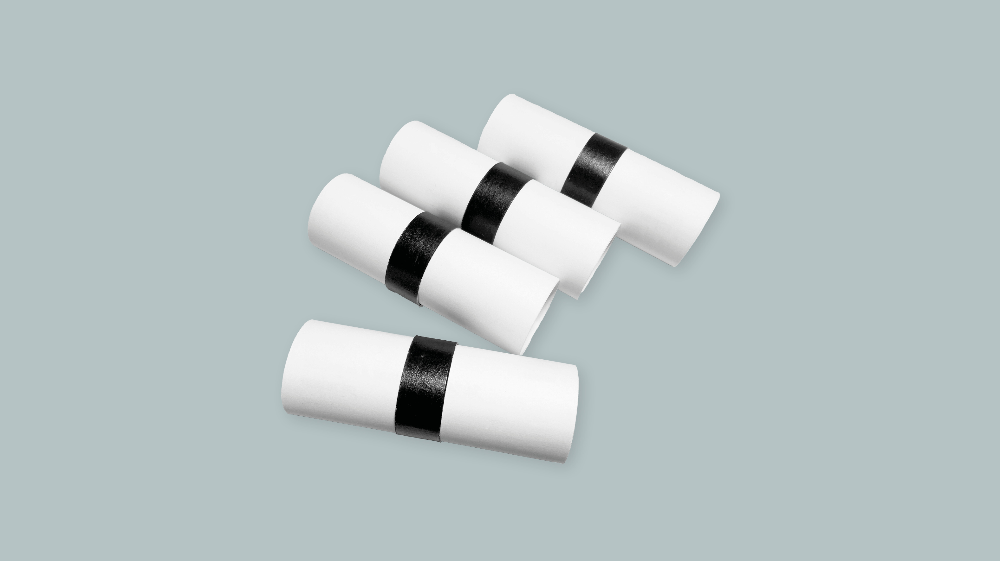
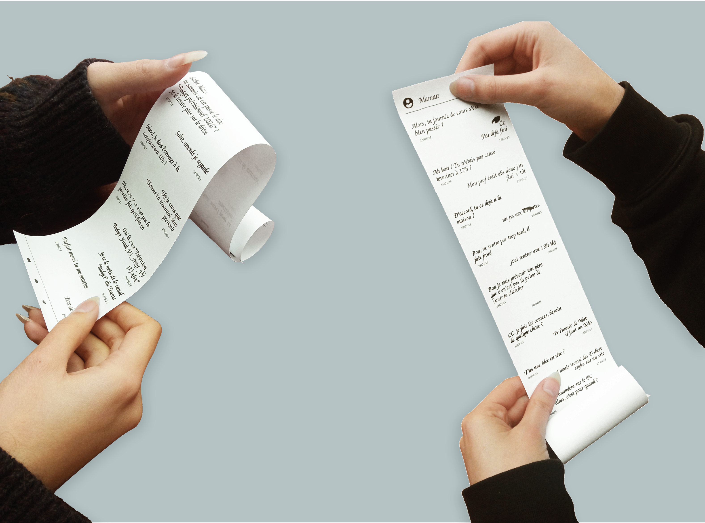
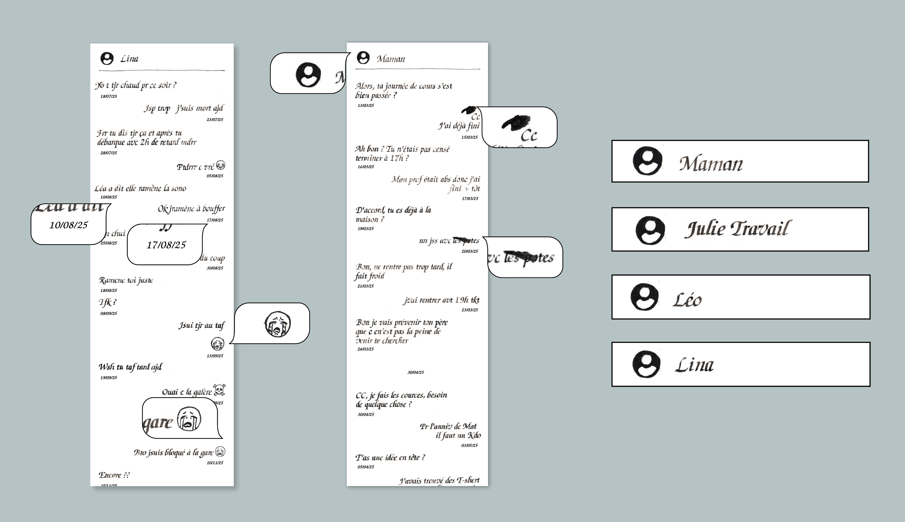
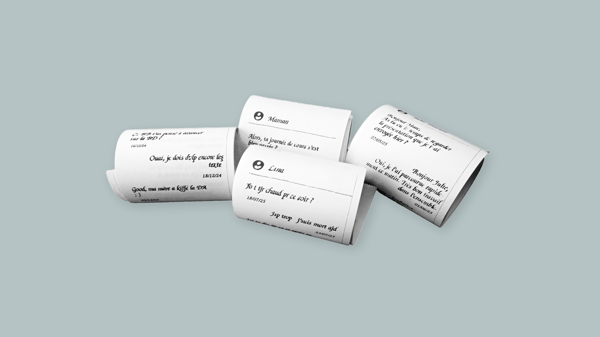
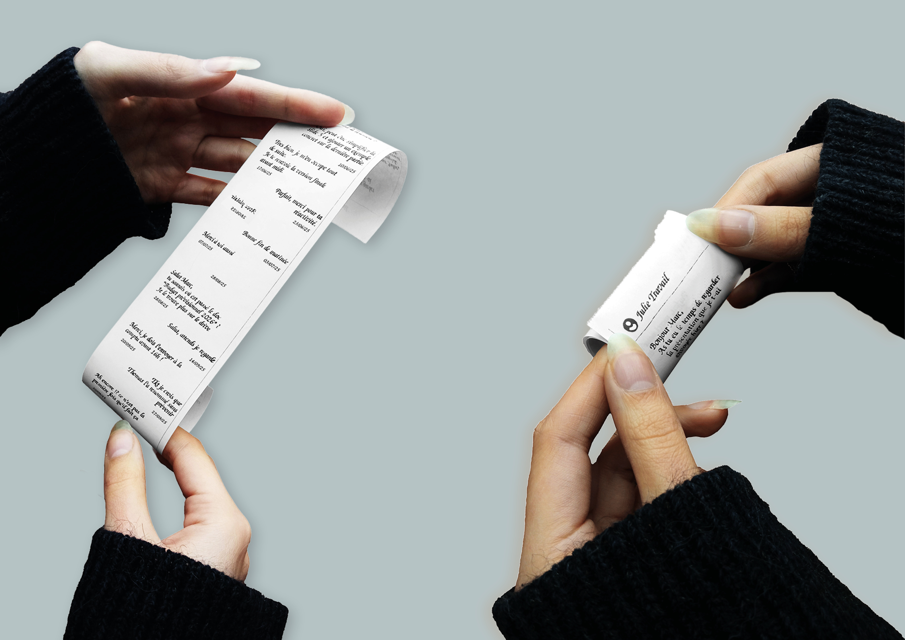

Ce projet interroge la place de la lenteur dans une société dominée par l’instantanéité, le but étant de transformer un acte rapide en un acte lent : le sms, un acte instantané, accessible partout, à tout moment par un dispositif omniprésent, le téléphone.
J’ai choisi de transformer le SMS en un acte lent grâce à la calligraphie : Le langage SMS, habituellement produit en quelques secondes, devient ici un geste manuscrit exigeant temps, précision et attention. Le format s’inspire du parchemin rotulus : un objet vertical à dérouler, qui remplace le scroll du téléphone par un déploiement physique. La conversation devient alors tangible, inscrite dans la durée.
Le projet mêle écriture manuscrite et codes du SMS : les messages datés s’étalent dans le temps comme une correspondance, les emojis tous différents et les taches d’encre rappellent le geste humain, et la variété des conversations montre la diversité des langages et abréviations propres aux relations.
Une seconde réalisation reprend les conversations calligraphiées sous forme de tickets de caisse : Objet industriel, standardisé et produit en série, il illustre le phénomène de slow washing : la récupération de valeurs liées à la lenteur et à l’authenticité dans des logiques de production rapide et commerciale. Le geste lent devient alors un simple signe esthétique, vidé de sa dimension humaine.




